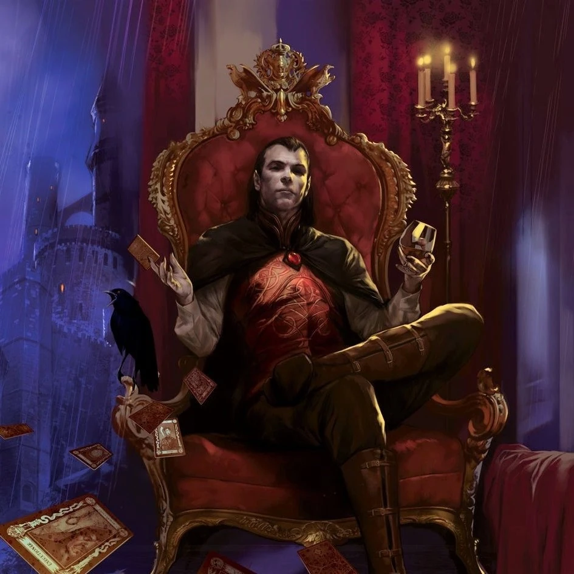
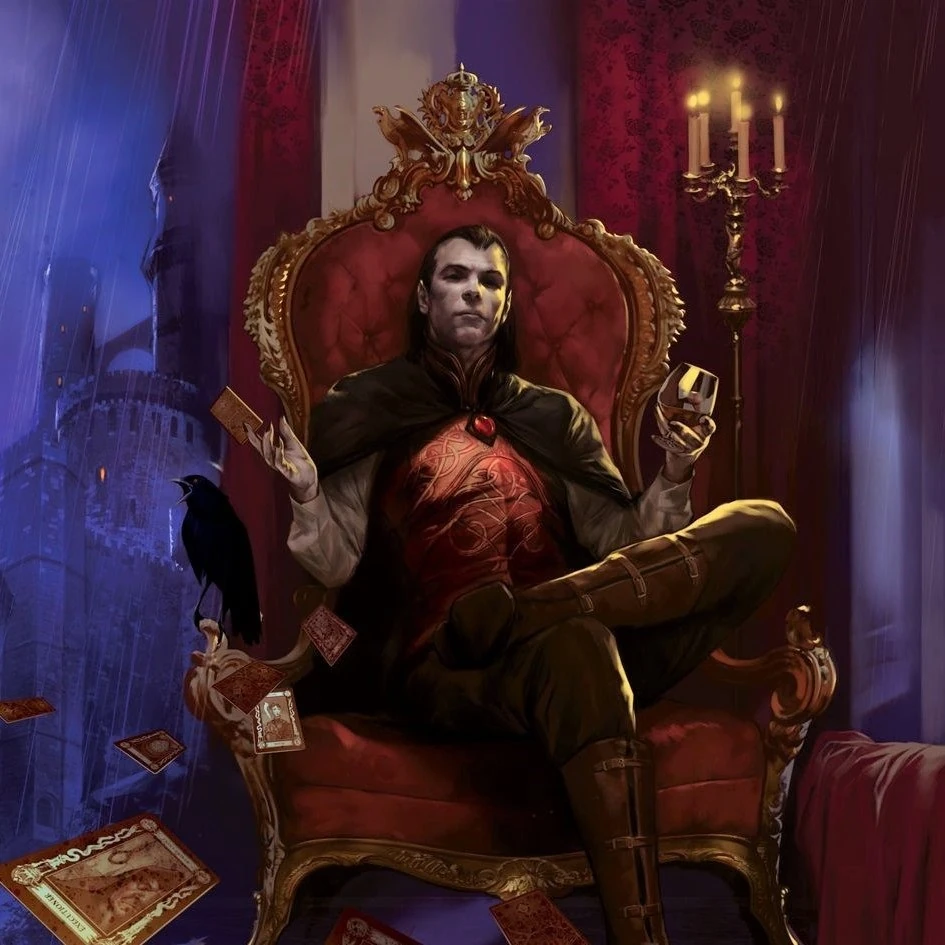

Strahd von Zarovich
- Aliases: Strahd, de duivel
- Tags: npc
- NpcStatus: Alive
 De heerser over Barovia en een krachtige vampier. Hij woont in Castle Ravenloft.
Hij heeft talloze krachten, die hij waarschijnlijk heeft gehaald uit de Amber Temple.
 De heerser over Barovia en een krachtige vampier. Hij woont in Castle Ravenloft.
Hij heeft talloze krachten, die hij waarschijnlijk heeft gehaald uit de Amber Temple.